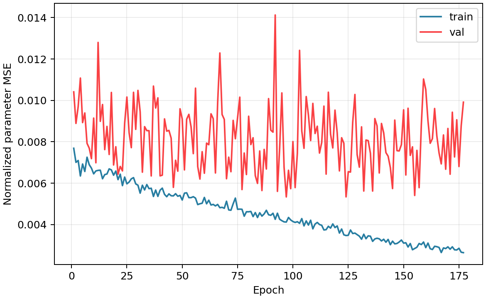


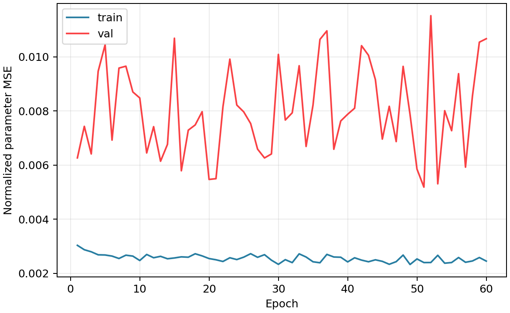
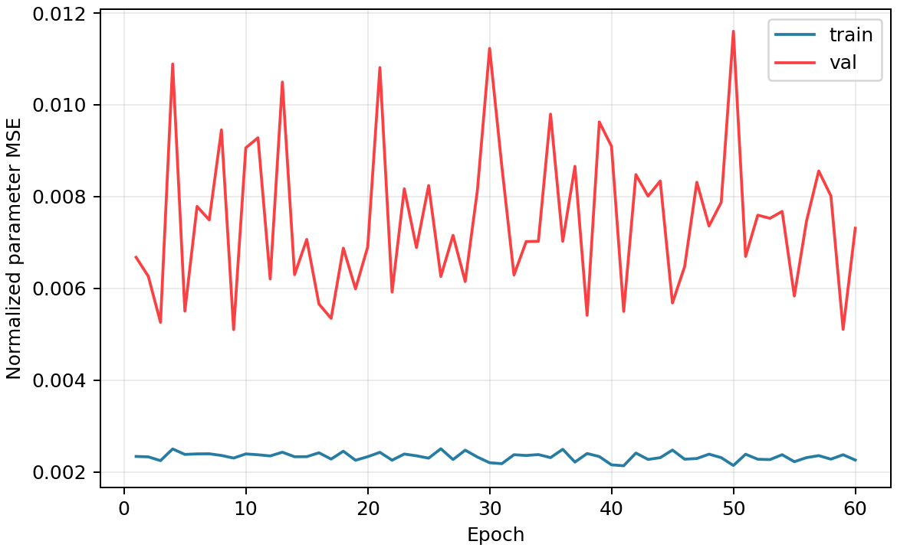
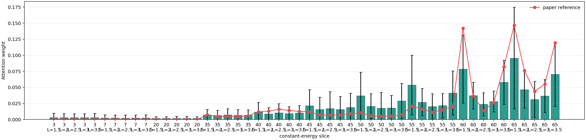
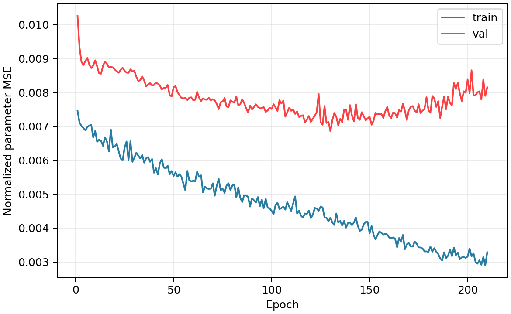
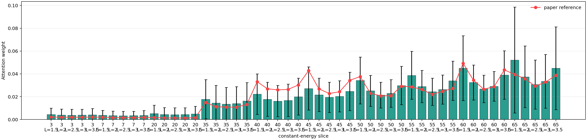
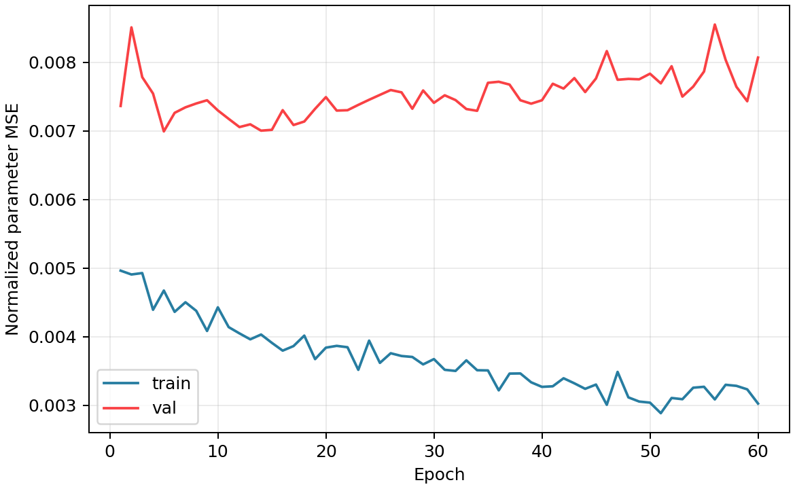
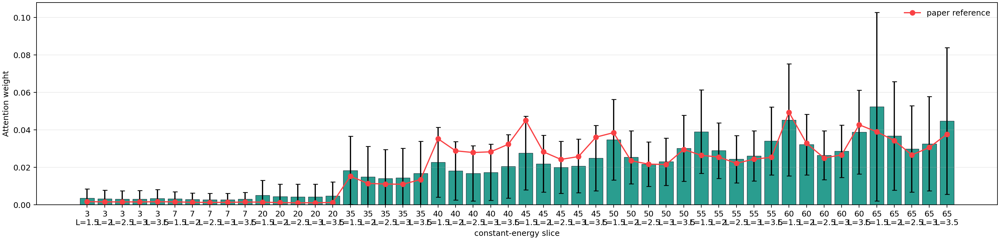
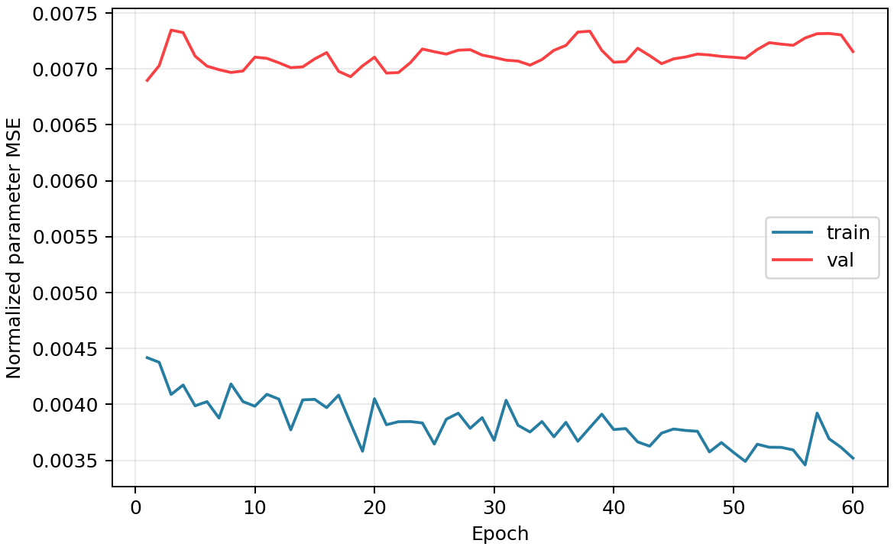
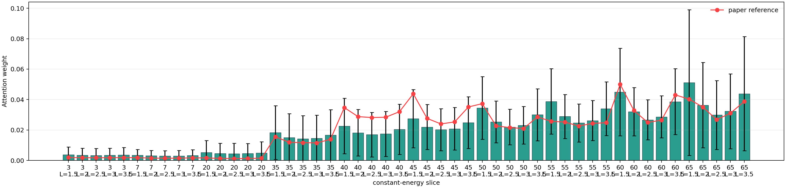
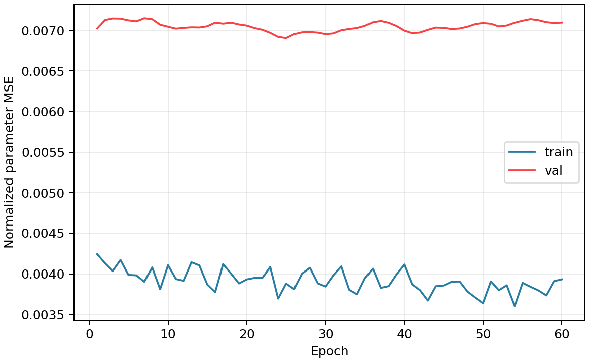
这页比较的是同一个 FWHM=10 meV、n=512、wide 参数范围数据集上的模型。先用 Fig.3-only 建立路径谱基线，再用 4D maps 学 residual，最后做验证集选择的 ensemble。判断重点不是亮峰看起来像不像，而是各参数的 range-normalized MAE 是否下降，尤其是 SA、SJc 这类更难的量。 当前已完成模型里，最好的是 gated4d + residual ensemble，测试 mean range MAE 为 4.08%。
lno327_inverse_4d_wide_fwhm10_n512_q160_e180_h81_k121_l5.h5Fig.3-only 回答“只看路径谱能做到什么”；residual4d 回答“4D maps 能否补充路径谱没捕捉到的弱峰、肩峰和强度重分布”；ensemble 回答“两个模型的错误是否互补”。如果 ensemble 降低了 SA 或 SJc 的误差，就说明 4D 信息不是装饰，而是在补可辨识性。
| 参数 | 物理含义 | 单位 | 为什么关心 |
|---|---|---|---|
| SJc | c 轴/层间方向的主导交换强度 | meV | 通常强烈影响整体能量尺度和主要分支位置；本轮仍是较难参数之一。 |
| SJ1a | 面内 a 方向近邻交换 | meV | 影响面内各向异性和分支细节，当前 CNN 识别相对稳定。 |
| SJ1b | 面内 b 方向近邻交换 | meV | 和 SJ1a 一起控制面内不等价方向，容易与局部谱形变化相关。 |
| SJ2 | 面内次近邻交换 | meV | 本轮误差最低，说明 FWHM=10 的谱对它比较敏感。 |
| SA | 单离子各向异性/各向异性能量项 | meV | 量级小，最依赖弱峰、低强度结构和 4D 强度重分布。 |
| 模型 | 状态 | 测试 mean range MAE | best epoch | 耗时 | 训练参数量 | 训练配置 | 输入 | 问题 |
|---|---|---|---|---|---|---|---|---|
| gated4d baseline | done | 5.44% | 251 | - | 105104/105104 | batch=64, hidden=32, embedding=64, epochs=280, aux=0.05, scope=all | Fig.2/4D maps + Fig.3 path | 4D maps 直接融合后，能否比只看路径谱更好。 |
| Fig.3-only baseline | done | 6.69% | 254 | 35s | 65093/65093 | batch=64, hidden=32, embedding=64, epochs=280, lr=1e-3, scope=all | Fig.3 path only | 只看高对称路径时，反演上限在哪里。 |
| residual4d warm Fig.3 | done | 4.67% | 97 | 2m 45s | 44757/105365 | batch=64, hidden=32, embedding=64, epochs=220, lr=1e-3, aux=0.03, scope=no_fig3_encoder | Fig.2/4D maps + warm-started Fig.3 path | 4D maps 是否能补路径谱没捕捉到的弱峰/肩峰信息。 |
| residual4d heads lr=2e-3 | done | 4.34% | 46 | 33s | 28245/105365 | batch=64, hidden=32, embedding=64, epochs=60, lr=2e-3, aux=0.0, scope=heads | Frozen encoders + residual heads | 只调最后预测头，能否把 residual 修正推到更好的区域。 |
| residual4d heads lr=5e-4 | done | 4.25% | 51 | 33s | 28245/105365 | batch=64, hidden=32, embedding=64, epochs=60, lr=5e-4, aux=0.0, scope=heads | Frozen encoders + residual heads | 降低学习率后是否稳定改善验证集。 |
| residual4d heads lr=2e-4 | done | 4.25% | 9 | 34s | 28245/105365 | batch=64, hidden=32, embedding=64, epochs=60, lr=2e-4, aux=0.0, scope=heads | Frozen encoders + residual heads | 继续 cooldown 是否还有收益，还是已经过拟合/平台化。 |
| gated4d + residual ensemble | done | 4.08% | - | 12s | - | grid=101, validation-selected convex weights, per-parameter weights enabled | Two trained checkpoints | 两个模型错误是否互补，逐参数融合能否进一步降低误差。 |
| residual4d warm Fig.3 (b128) | done | 4.65% | 130 | - | 44757/105365 | batch=128, hidden=32, embedding=64, epochs=220, lr=1e-3, aux=0.03, scope=no_fig3_encoder | Fig.2/4D maps + warm-started Fig.3 path | 更大 batch 是否带来更稳定的收敛与更低测试误差。 |
| residual4d heads lr=2e-3 (b128) | done | 4.61% | 5 | - | 28245/105365 | batch=128, hidden=32, embedding=64, epochs=60, lr=2e-3, aux=0.0, scope=heads | Frozen encoders + residual heads | b128 head-only 是否能明显改善。 |
| residual4d heads lr=5e-4 (b128) | done | 4.48% | 1 | - | 28245/105365 | batch=128, hidden=32, embedding=64, epochs=60, lr=5e-4, aux=0.0, scope=heads | Frozen encoders + residual heads | b128 cooldown 是否更稳。 |
| residual4d heads lr=2e-4 (b128) | done | 4.47% | 25 | - | 28245/105365 | batch=128, hidden=32, embedding=64, epochs=60, lr=2e-4, aux=0.0, scope=heads | Frozen encoders + residual heads | b128 最终误差能否追上 b64 路线。 |
| gated4d + residual(b128) ensemble | done | 4.41% | - | - | - | grid=101, validation-selected convex weights, per-parameter weights enabled | Two trained checkpoints | b128 是否提供与 b64 不同的错误模式。 |
| 模型 | 参数 | MAE/range | MAE | RMSE |
|---|---|---|---|---|
| gated4d baseline | SJc | 6.57% | 1.966 | 2.723 |
| gated4d baseline | SJ1a | 3.58% | 0.2064 | 0.2636 |
| gated4d baseline | SJ1b | 3.72% | 0.2783 | 0.3449 |
| gated4d baseline | SJ2 | 2.74% | 0.2161 | 0.2775 |
| gated4d baseline | SA | 10.62% | 0.02108 | 0.03272 |
| Fig.3-only baseline | SJc | 8.64% | 2.588 | 3.242 |
| Fig.3-only baseline | SJ1a | 5.01% | 0.2887 | 0.3536 |
| Fig.3-only baseline | SJ1b | 5.29% | 0.3959 | 0.4855 |
| Fig.3-only baseline | SJ2 | 2.42% | 0.1914 | 0.2474 |
| Fig.3-only baseline | SA | 12.09% | 0.02401 | 0.03376 |
| residual4d warm Fig.3 | SJc | 4.82% | 1.442 | 2.114 |
| residual4d warm Fig.3 | SJ1a | 2.98% | 0.172 | 0.2273 |
| residual4d warm Fig.3 | SJ1b | 3.23% | 0.2418 | 0.3172 |
| residual4d warm Fig.3 | SJ2 | 2.20% | 0.1737 | 0.2355 |
| residual4d warm Fig.3 | SA | 10.11% | 0.02007 | 0.03315 |
| residual4d heads lr=2e-3 | SJc | 3.89% | 1.166 | 1.812 |
| residual4d heads lr=2e-3 | SJ1a | 2.49% | 0.1434 | 0.1835 |
| residual4d heads lr=2e-3 | SJ1b | 2.82% | 0.2109 | 0.2708 |
| residual4d heads lr=2e-3 | SJ2 | 1.75% | 0.1385 | 0.1839 |
| residual4d heads lr=2e-3 | SA | 10.74% | 0.02132 | 0.03712 |
| residual4d heads lr=5e-4 | SJc | 3.90% | 1.168 | 1.87 |
| residual4d heads lr=5e-4 | SJ1a | 2.55% | 0.147 | 0.1904 |
| residual4d heads lr=5e-4 | SJ1b | 2.54% | 0.1903 | 0.2463 |
| residual4d heads lr=5e-4 | SJ2 | 1.87% | 0.1481 | 0.2025 |
| residual4d heads lr=5e-4 | SA | 10.41% | 0.02067 | 0.03608 |
| residual4d heads lr=2e-4 | SJc | 3.88% | 1.162 | 1.886 |
| residual4d heads lr=2e-4 | SJ1a | 2.41% | 0.139 | 0.181 |
| residual4d heads lr=2e-4 | SJ1b | 2.72% | 0.2038 | 0.2606 |
| residual4d heads lr=2e-4 | SJ2 | 1.95% | 0.1543 | 0.2086 |
| residual4d heads lr=2e-4 | SA | 10.31% | 0.02047 | 0.03652 |
| gated4d + residual ensemble | SJc | 3.88% | 1.162 | 1.886 |
| gated4d + residual ensemble | SJ1a | 2.41% | 0.1393 | 0.179 |
| gated4d + residual ensemble | SJ1b | 2.63% | 0.1971 | 0.2534 |
| gated4d + residual ensemble | SJ2 | 1.95% | 0.1543 | 0.2086 |
| gated4d + residual ensemble | SA | 9.53% | 0.01893 | 0.03338 |
| residual4d warm Fig.3 (b128) | SJc | 4.82% | 1.445 | 2.109 |
| residual4d warm Fig.3 (b128) | SJ1a | 3.16% | 0.1823 | 0.2311 |
| residual4d warm Fig.3 (b128) | SJ1b | 3.51% | 0.2629 | 0.3489 |
| residual4d warm Fig.3 (b128) | SJ2 | 1.89% | 0.1495 | 0.2083 |
| residual4d warm Fig.3 (b128) | SA | 9.88% | 0.01962 | 0.03194 |
| residual4d heads lr=2e-3 (b128) | SJc | 4.74% | 1.42 | 2.037 |
| residual4d heads lr=2e-3 (b128) | SJ1a | 3.22% | 0.186 | 0.2389 |
| residual4d heads lr=2e-3 (b128) | SJ1b | 3.50% | 0.2623 | 0.3352 |
| residual4d heads lr=2e-3 (b128) | SJ2 | 1.95% | 0.1538 | 0.209 |
| residual4d heads lr=2e-3 (b128) | SA | 9.62% | 0.0191 | 0.03119 |
| residual4d heads lr=5e-4 (b128) | SJc | 4.61% | 1.379 | 2.004 |
| residual4d heads lr=5e-4 (b128) | SJ1a | 2.98% | 0.1721 | 0.2232 |
| residual4d heads lr=5e-4 (b128) | SJ1b | 3.24% | 0.2423 | 0.3138 |
| residual4d heads lr=5e-4 (b128) | SJ2 | 1.90% | 0.1501 | 0.2039 |
| residual4d heads lr=5e-4 (b128) | SA | 9.69% | 0.01924 | 0.03151 |
| residual4d heads lr=2e-4 (b128) | SJc | 4.77% | 1.427 | 2.079 |
| residual4d heads lr=2e-4 (b128) | SJ1a | 2.94% | 0.1693 | 0.219 |
| residual4d heads lr=2e-4 (b128) | SJ1b | 3.12% | 0.2338 | 0.3123 |
| residual4d heads lr=2e-4 (b128) | SJ2 | 1.87% | 0.1477 | 0.211 |
| residual4d heads lr=2e-4 (b128) | SA | 9.66% | 0.01918 | 0.0319 |
| gated4d + residual(b128) ensemble | SJc | 4.77% | 1.427 | 2.079 |
| gated4d + residual(b128) ensemble | SJ1a | 2.85% | 0.1645 | 0.2118 |
| gated4d + residual(b128) ensemble | SJ1b | 3.01% | 0.225 | 0.2971 |
| gated4d + residual(b128) ensemble | SJ2 | 1.87% | 0.1477 | 0.211 |
| gated4d + residual(b128) ensemble | SA | 9.58% | 0.01902 | 0.03153 |
| 模型 | 参数 | 参考值 | 预测值 | 偏差 |
|---|---|---|---|---|
| gated4d baseline | SJc | 39.86 | 40.08 | +0.2156 |
| gated4d baseline | SJ1a | 2.36 | 2.494 | +0.1338 |
| gated4d baseline | SJ1b | 3.71 | 3.769 | +0.05875 |
| gated4d baseline | SJ2 | 4.63 | 4.608 | -0.02235 |
| gated4d baseline | SA | -0.07 | -0.07045 | -0.0004483 |
| Fig.3-only baseline | SJc | 39.86 | 41.86 | +2.004 |
| Fig.3-only baseline | SJ1a | 2.36 | 2.132 | -0.2279 |
| Fig.3-only baseline | SJ1b | 3.71 | 3.36 | -0.3496 |
| Fig.3-only baseline | SJ2 | 4.63 | 4.53 | -0.09958 |
| Fig.3-only baseline | SA | -0.07 | -0.06163 | +0.008373 |
| residual4d warm Fig.3 | SJc | 39.86 | 40.41 | +0.5519 |
| residual4d warm Fig.3 | SJ1a | 2.36 | 2.473 | +0.1128 |
| residual4d warm Fig.3 | SJ1b | 3.71 | 3.818 | +0.1076 |
| residual4d warm Fig.3 | SJ2 | 4.63 | 4.706 | +0.07608 |
| residual4d warm Fig.3 | SA | -0.07 | -0.05997 | +0.01003 |
| residual4d heads lr=2e-3 | SJc | 39.86 | 40.47 | +0.6092 |
| residual4d heads lr=2e-3 | SJ1a | 2.36 | 2.363 | +0.002667 |
| residual4d heads lr=2e-3 | SJ1b | 3.71 | 3.718 | +0.007556 |
| residual4d heads lr=2e-3 | SJ2 | 4.63 | 4.612 | -0.01768 |
| residual4d heads lr=2e-3 | SA | -0.07 | -0.05583 | +0.01417 |
| residual4d heads lr=5e-4 | SJc | 39.86 | 40.4 | +0.5403 |
| residual4d heads lr=5e-4 | SJ1a | 2.36 | 2.418 | +0.05804 |
| residual4d heads lr=5e-4 | SJ1b | 3.71 | 3.785 | +0.07497 |
| residual4d heads lr=5e-4 | SJ2 | 4.63 | 4.641 | +0.01077 |
| residual4d heads lr=5e-4 | SA | -0.07 | -0.05769 | +0.01231 |
| residual4d heads lr=2e-4 | SJc | 39.86 | 40.32 | +0.4597 |
| residual4d heads lr=2e-4 | SJ1a | 2.36 | 2.387 | +0.0267 |
| residual4d heads lr=2e-4 | SJ1b | 3.71 | 3.795 | +0.08547 |
| residual4d heads lr=2e-4 | SJ2 | 4.63 | 4.6 | -0.02966 |
| residual4d heads lr=2e-4 | SA | -0.07 | -0.05847 | +0.01153 |
| gated4d + residual ensemble | SJc | 39.86 | 40.32 | +0.4597 |
| gated4d + residual ensemble | SJ1a | 2.36 | 2.398 | +0.03847 |
| gated4d + residual ensemble | SJ1b | 3.71 | 3.792 | +0.08226 |
| gated4d + residual ensemble | SJ2 | 4.63 | 4.6 | -0.02966 |
| gated4d + residual ensemble | SA | -0.07 | -0.06314 | +0.006857 |
| residual4d warm Fig.3 (b128) | SJc | 39.86 | 40.34 | +0.4777 |
| residual4d warm Fig.3 (b128) | SJ1a | 2.36 | 2.436 | +0.07618 |
| residual4d warm Fig.3 (b128) | SJ1b | 3.71 | 3.694 | -0.01569 |
| residual4d warm Fig.3 (b128) | SJ2 | 4.63 | 4.631 | +0.0007486 |
| residual4d warm Fig.3 (b128) | SA | -0.07 | -0.0614 | +0.0086 |
| residual4d heads lr=2e-3 (b128) | SJc | 39.86 | 40.14 | +0.2799 |
| residual4d heads lr=2e-3 (b128) | SJ1a | 2.36 | 2.378 | +0.0175 |
| residual4d heads lr=2e-3 (b128) | SJ1b | 3.71 | 3.607 | -0.103 |
| residual4d heads lr=2e-3 (b128) | SJ2 | 4.63 | 4.701 | +0.07143 |
| residual4d heads lr=2e-3 (b128) | SA | -0.07 | -0.0564 | +0.0136 |
| residual4d heads lr=5e-4 (b128) | SJc | 39.86 | 40.27 | +0.4145 |
| residual4d heads lr=5e-4 (b128) | SJ1a | 2.36 | 2.436 | +0.07558 |
| residual4d heads lr=5e-4 (b128) | SJ1b | 3.71 | 3.712 | +0.001629 |
| residual4d heads lr=5e-4 (b128) | SJ2 | 4.63 | 4.575 | -0.05543 |
| residual4d heads lr=5e-4 (b128) | SA | -0.07 | -0.05876 | +0.01124 |
| residual4d heads lr=2e-4 (b128) | SJc | 39.86 | 40.41 | +0.5527 |
| residual4d heads lr=2e-4 (b128) | SJ1a | 2.36 | 2.433 | +0.07263 |
| residual4d heads lr=2e-4 (b128) | SJ1b | 3.71 | 3.757 | +0.04711 |
| residual4d heads lr=2e-4 (b128) | SJ2 | 4.63 | 4.651 | +0.02102 |
| residual4d heads lr=2e-4 (b128) | SA | -0.07 | -0.05986 | +0.01014 |
| gated4d + residual(b128) ensemble | SJc | 39.86 | 40.41 | +0.5527 |
| gated4d + residual(b128) ensemble | SJ1a | 2.36 | 2.445 | +0.08486 |
| gated4d + residual(b128) ensemble | SJ1b | 3.71 | 3.759 | +0.04873 |
| gated4d + residual(b128) ensemble | SJ2 | 4.63 | 4.651 | +0.02102 |
| gated4d + residual(b128) ensemble | SA | -0.07 | -0.06123 | +0.008766 |
这里的 gain 来自模型内部 auxiliary Fig.3 head 与 fused prediction 的差值；正值越大，表示融合 4D 信息后该参数的 range-normalized MAE 降得越多。
| 模型 | 参数 | fused gain | 解释 |
|---|---|---|---|
| gated4d baseline | SJc | 4.21% | 正值表示 fused 比 Fig.3 auxiliary 更好 |
| gated4d baseline | SJ1a | 4.45% | 正值表示 fused 比 Fig.3 auxiliary 更好 |
| gated4d baseline | SJ1b | 4.03% | 正值表示 fused 比 Fig.3 auxiliary 更好 |
| gated4d baseline | SJ2 | 0.29% | 正值表示 fused 比 Fig.3 auxiliary 更好 |
| gated4d baseline | SA | 2.10% | 正值表示 fused 比 Fig.3 auxiliary 更好 |
| residual4d warm Fig.3 | SJc | 0.41% | 正值表示 fused 比 Fig.3 auxiliary 更好 |
| residual4d warm Fig.3 | SJ1a | 1.82% | 正值表示 fused 比 Fig.3 auxiliary 更好 |
| residual4d warm Fig.3 | SJ1b | 3.65% | 正值表示 fused 比 Fig.3 auxiliary 更好 |
| residual4d warm Fig.3 | SJ2 | 3.44% | 正值表示 fused 比 Fig.3 auxiliary 更好 |
| residual4d warm Fig.3 | SA | 0.17% | 正值表示 fused 比 Fig.3 auxiliary 更好 |
| residual4d heads lr=2e-3 | SJc | 1.49% | 正值表示 fused 比 Fig.3 auxiliary 更好 |
| residual4d heads lr=2e-3 | SJ1a | 5.79% | 正值表示 fused 比 Fig.3 auxiliary 更好 |
| residual4d heads lr=2e-3 | SJ1b | 7.81% | 正值表示 fused 比 Fig.3 auxiliary 更好 |
| residual4d heads lr=2e-3 | SJ2 | 10.99% | 正值表示 fused 比 Fig.3 auxiliary 更好 |
| residual4d heads lr=2e-3 | SA | 0.03% | 正值表示 fused 比 Fig.3 auxiliary 更好 |
| residual4d heads lr=5e-4 | SJc | 2.26% | 正值表示 fused 比 Fig.3 auxiliary 更好 |
| residual4d heads lr=5e-4 | SJ1a | 7.25% | 正值表示 fused 比 Fig.3 auxiliary 更好 |
| residual4d heads lr=5e-4 | SJ1b | 9.40% | 正值表示 fused 比 Fig.3 auxiliary 更好 |
| residual4d heads lr=5e-4 | SJ2 | 12.00% | 正值表示 fused 比 Fig.3 auxiliary 更好 |
| residual4d heads lr=5e-4 | SA | 0.18% | 正值表示 fused 比 Fig.3 auxiliary 更好 |
| residual4d heads lr=2e-4 | SJc | 2.35% | 正值表示 fused 比 Fig.3 auxiliary 更好 |
| residual4d heads lr=2e-4 | SJ1a | 6.94% | 正值表示 fused 比 Fig.3 auxiliary 更好 |
| residual4d heads lr=2e-4 | SJ1b | 9.48% | 正值表示 fused 比 Fig.3 auxiliary 更好 |
| residual4d heads lr=2e-4 | SJ2 | 12.00% | 正值表示 fused 比 Fig.3 auxiliary 更好 |
| residual4d heads lr=2e-4 | SA | 0.26% | 正值表示 fused 比 Fig.3 auxiliary 更好 |
| residual4d warm Fig.3 (b128) | SJc | 1.00% | 正值表示 fused 比 Fig.3 auxiliary 更好 |
| residual4d warm Fig.3 (b128) | SJ1a | 1.53% | 正值表示 fused 比 Fig.3 auxiliary 更好 |
| residual4d warm Fig.3 (b128) | SJ1b | 3.31% | 正值表示 fused 比 Fig.3 auxiliary 更好 |
| residual4d warm Fig.3 (b128) | SJ2 | 4.07% | 正值表示 fused 比 Fig.3 auxiliary 更好 |
| residual4d warm Fig.3 (b128) | SA | 0.32% | 正值表示 fused 比 Fig.3 auxiliary 更好 |
| residual4d heads lr=2e-3 (b128) | SJc | 1.31% | 正值表示 fused 比 Fig.3 auxiliary 更好 |
| residual4d heads lr=2e-3 (b128) | SJ1a | 1.54% | 正值表示 fused 比 Fig.3 auxiliary 更好 |
| residual4d heads lr=2e-3 (b128) | SJ1b | 5.35% | 正值表示 fused 比 Fig.3 auxiliary 更好 |
| residual4d heads lr=2e-3 (b128) | SJ2 | 5.69% | 正值表示 fused 比 Fig.3 auxiliary 更好 |
| residual4d heads lr=2e-3 (b128) | SA | 0.53% | 正值表示 fused 比 Fig.3 auxiliary 更好 |
| residual4d heads lr=5e-4 (b128) | SJc | 1.21% | 正值表示 fused 比 Fig.3 auxiliary 更好 |
| residual4d heads lr=5e-4 (b128) | SJ1a | 2.31% | 正值表示 fused 比 Fig.3 auxiliary 更好 |
| residual4d heads lr=5e-4 (b128) | SJ1b | 4.99% | 正值表示 fused 比 Fig.3 auxiliary 更好 |
| residual4d heads lr=5e-4 (b128) | SJ2 | 5.40% | 正值表示 fused 比 Fig.3 auxiliary 更好 |
| residual4d heads lr=5e-4 (b128) | SA | 0.30% | 正值表示 fused 比 Fig.3 auxiliary 更好 |
| residual4d heads lr=2e-4 (b128) | SJc | 1.25% | 正值表示 fused 比 Fig.3 auxiliary 更好 |
| residual4d heads lr=2e-4 (b128) | SJ1a | 2.79% | 正值表示 fused 比 Fig.3 auxiliary 更好 |
| residual4d heads lr=2e-4 (b128) | SJ1b | 6.12% | 正值表示 fused 比 Fig.3 auxiliary 更好 |
| residual4d heads lr=2e-4 (b128) | SJ2 | 6.55% | 正值表示 fused 比 Fig.3 auxiliary 更好 |
| residual4d heads lr=2e-4 (b128) | SA | 0.57% | 正值表示 fused 比 Fig.3 auxiliary 更好 |
下一步不应再只重复 batch=64 的小模型。当前 4080S 有 32GB 显存，已有训练显示完整 4D gated batch=64 约吃 16GB，head-only 阶段只吃约 6GB；因此应先做 GPU sweep，实测 batch=96/128/160 与 hidden/embedding 放大的显存和吞吐，再决定是否训练更大模型。若 batch=128 稳定，应优先重跑 gated4d/residual4d 的大 batch 版本；若显存仍充足，再试 hidden=48/64、embedding=96/128。如果这些不能继续改善，再扩大样本数或参数范围，而不是盲目加深模型。
| mode | hidden | embedding | batch | 状态 | 峰值显存 MB | samples/s | s/step | 参数量 |
|---|---|---|---|---|---|---|---|---|
| gated4d | 32 | 64 | 64 | OK | 14061 | 39.8 | 1.606 | 105104 |
| gated4d | 32 | 64 | 96 | OK | 20573 | 52.3 | 1.837 | 105104 |
| gated4d | 32 | 64 | 128 | OK | 27088 | 82.7 | 1.547 | 105104 |
| gated4d | 32 | 64 | 160 | cuda_out_of_memory | - | - | - | - |
| gated4d | 32 | 64 | 192 | cuda_out_of_memory | - | - | - | - |
| gated4d | 48 | 96 | 64 | OK | 20514 | 45.3 | 1.414 | 234064 |
| gated4d | 48 | 96 | 96 | OK | 30253 | 58.8 | 1.632 | 234064 |
| gated4d | 48 | 96 | 128 | cuda_out_of_memory | - | - | - | - |
| gated4d | 64 | 128 | 32 | OK | 14001 | 24.8 | 1.291 | 413968 |
| gated4d | 64 | 128 | 64 | OK | 26964 | 35.6 | 1.797 | 413968 |
| gated4d | 64 | 128 | 96 | cuda_out_of_memory | - | - | - | - |
| residual4d | 32 | 64 | 64 | OK | 14061 | 49.4 | 1.297 | 105365 |
| residual4d | 32 | 64 | 96 | OK | 20573 | 70.6 | 1.361 | 105365 |
| residual4d | 32 | 64 | 128 | OK | 27088 | 86.8 | 1.474 | 105365 |
| residual4d | 48 | 96 | 64 | OK | 20514 | 46.2 | 1.385 | 234453 |
| residual4d | 48 | 96 | 96 | OK | 30253 | 60.5 | 1.587 | 234453 |
| residual4d | 64 | 128 | 32 | OK | 14001 | 25.2 | 1.272 | 414485 |
| residual4d | 64 | 128 | 64 | OK | 26964 | 43.8 | 1.461 | 414485 |
| 优先级 | 实验 | 目的 | 停止条件 |
|---|---|---|---|
| 1 | GPU sweep: batch=64/96/128/160/192, hidden/embedding=32/64, 48/96, 64/128 | 找出 32GB 显存下吞吐最高且不 OOM 的配置 | 显存超过 90% 或单步速度明显变慢 |
| 2 | 用最佳 batch 重跑 gated4d 与 residual4d warm Fig.3 | 确认更大 batch 是否稳定降低验证集噪声 | 验证集不优于 4.08% ensemble |
| 3 | 更大模型 hidden=48/64、embedding=96/128 | 提高 4D 弱峰特征容量 | 训练集继续降但验证集不上升则停止 |
| 4 | 扩大 n 或参数范围 | 验证模型是否能泛化到更宽物理空间 | 若 512 样本已成为主要限制，再扩 n=1024/2048 |










